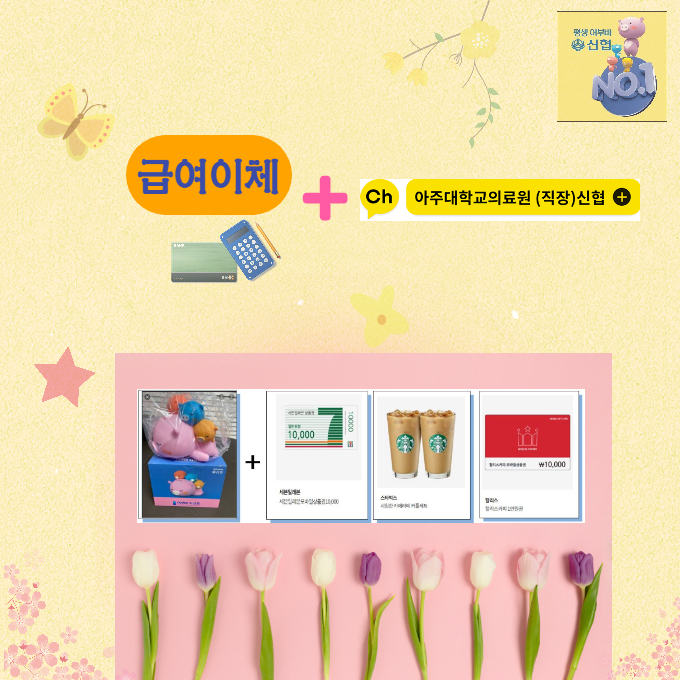

☆ 급여이체(신규,변경)+채널추가 이벤트 ☆
○ 지급대상: 신협으로 급여이체를 변경 및 카카오채널 추가 조합원
○ 선물종류: 어부바저금통+모바일 상품권(1만원 상당)
※ 모바일 상품권: 세븐일레븐,스타벅스, 할리스커피 중 택1
○ 상담(문의): ☎ 031)219-6052,6971
☞ 급여이체 등 주거래 조합원에게 이용고배당(아래참조)이 지급됩니다.
※ 이용고배당 지급액(2017~2020): 약 16억원(매년 약 3.2억원)지급.
아주대의료원 신협 카카오톡 채널 추가
카카오톡 상담톡(1:1채팅 문의)